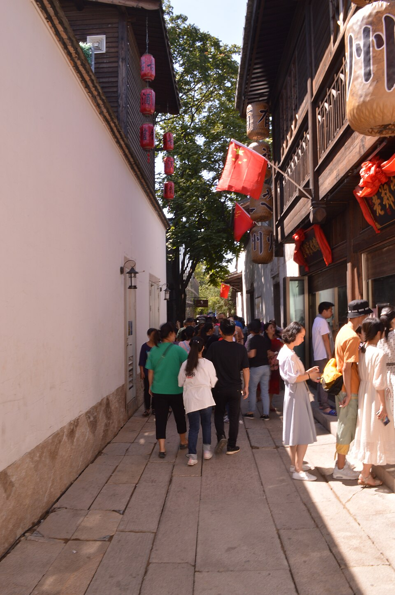
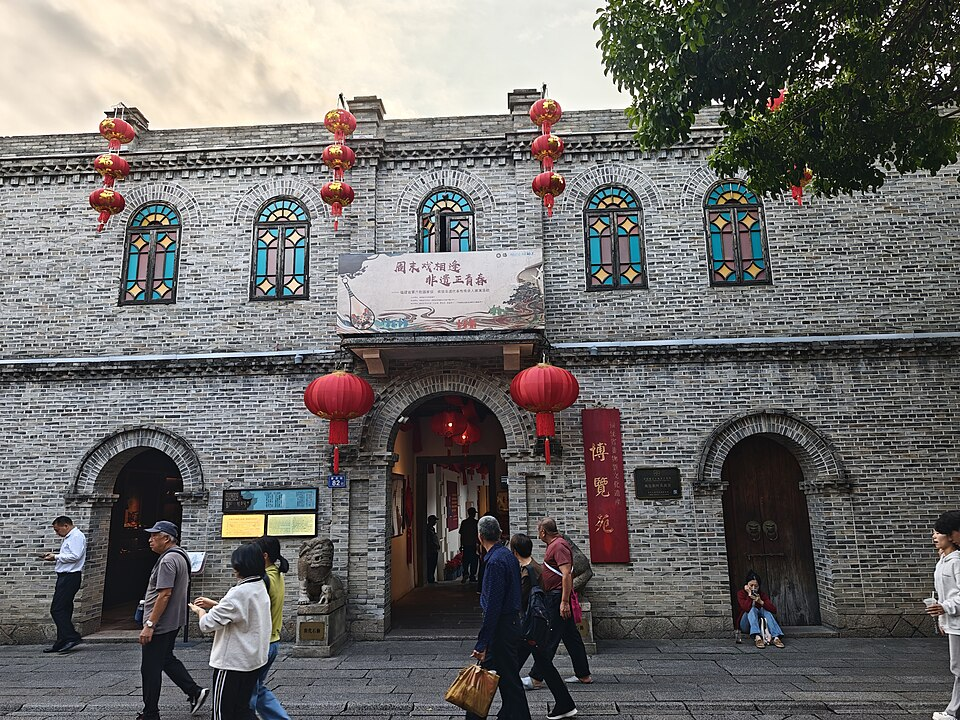
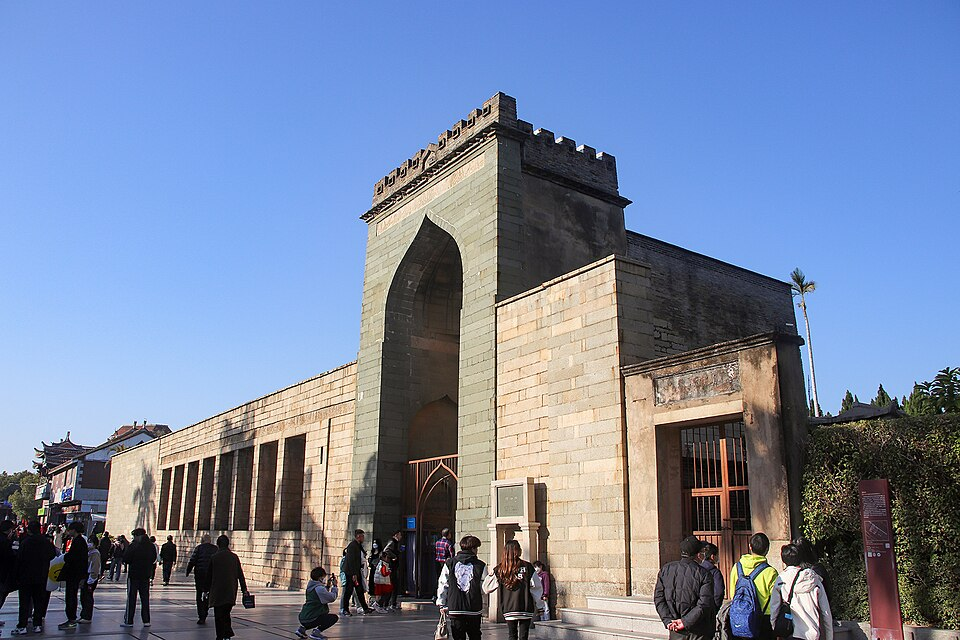
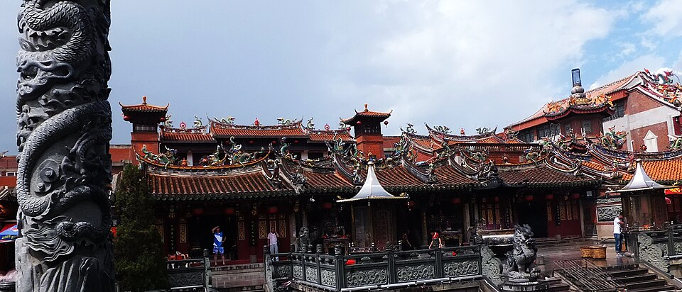
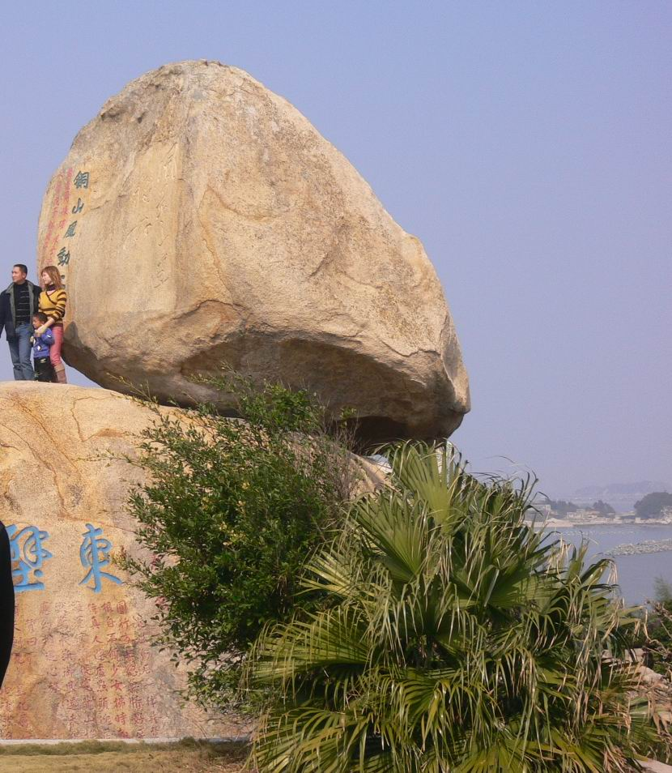
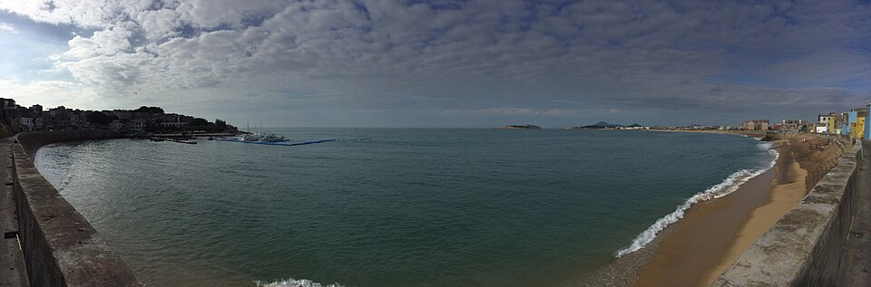
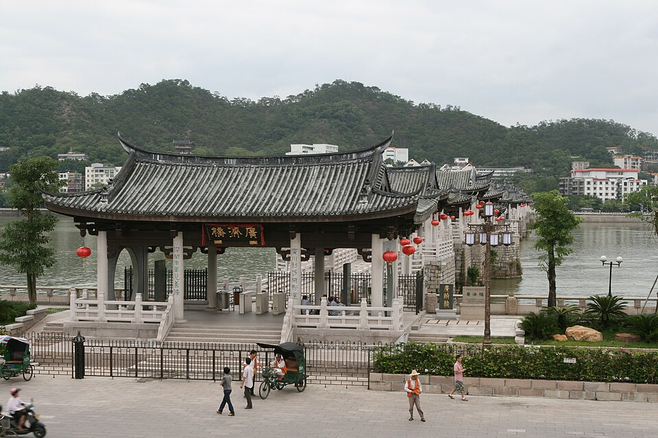
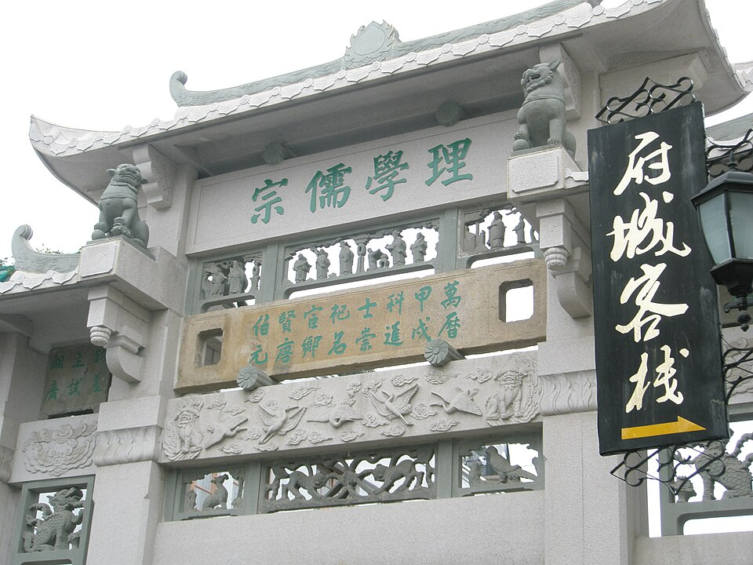
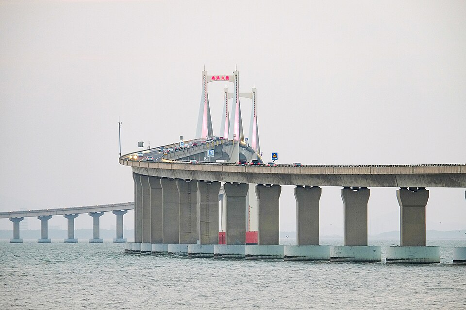
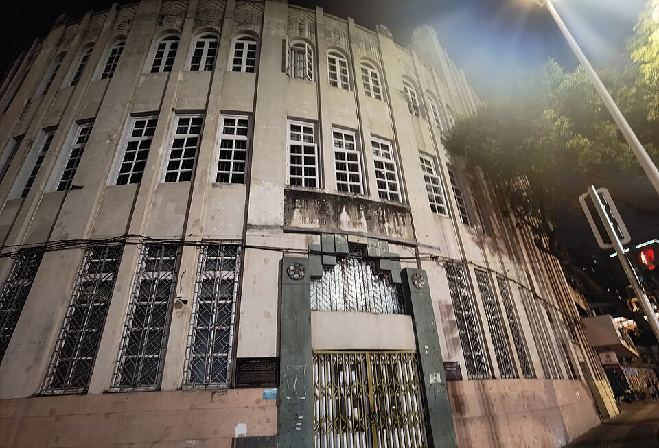

行程总览
一张表看全程
| 日期 | 路线 | 住哪 | 关键动作 |
|---|
| 10/1 周四 | 衡阳→长沙飞福州（MU2197，15:50 起飞） | 福州·美遇 3 号民宿（台江区沧洲街君临天华） | 提车→上下杭晚餐+夜游 |
| 10/2 周五 | 福州→泉州 180km/2.5h | 泉州·海和蓝美宿（古榕巷 9 号） | 上午三坊七巷，晚中山路夜游 |
| 10/3 周六 | 泉州古城全天（车不动） | 同上 | 开元寺+寺庙线+晚上免费展演 |
| 10/4 周日 | 泉州博物馆→东山岛 250km/3.5h | 东山·Retro 民宿（铜陵镇顶街） | 9 点进博物馆（已预约✔），10:15 出发 |
| 10/5 周一 | 东山岛→潮州 180km/2.5h | 潮州·耀和别院（牌坊街石牌巷） | 苏峰山赶早，广济桥灯光秀 |
| 10/6 周二 | 潮州→南澳岛 70km/1.5h+核验 | 南澳·玉珑湾 5 栋 1507 | 7:30 出发，莱芜湾核验入岛 |
| 10/7 周三 | 南澳→汕头老城→汕头站 G6309 14:03 | 家 | 7:30 前出岛，汕头玩半天再进站 |
10/1 提车当天必须办的事（只有一件）：
拿到两台车车牌后，立刻在「南澳畅行」微信小程序预约 10/6 上午入岛名额（两台车=两个名额，房东不代办）。办好后把预约成功截图发家庭群备查。
吃饭不用提前订：每餐都备了三个候选，到店看情况选；国庆高峰哪家排队久就换一家。电话都留着，想订再打。
节奏说明：每天午后都留了午休或轻松段（10/1–10/4 午后仍有 30–32℃），逛累随时可回住处休息，也可以继续逛——每个点都标了"可略"，按当天状态灵活来。10/5 起冷空气降温 4–6℃，备一件薄外套。
老人优惠证件带齐：4 位老人身份证（风动石/广济桥 60+ 免票或半价、总兵府金银岛半价）、13 岁孩子学生证、7 岁孩子量身高（1.2m 以下多景点免票）。全程门票能省约 300–400 元。
🌦 全程天气速览
中央气象台/中国天气网 2026-09-29 更新 · 出发前再复核一次
| 日期 | 地点 | 天气 | 气温 | 影响与应对 |
|---|
| 10/1 | 福州 | 多云转小雨 | 32/25℃ | 不影响室内+夜游，带伞 |
| 10/2 | 福州→泉州 | 多云转阴 | 31/25℃ | 好天，赶路日顺利 |
| 10/3 | 泉州 | 多云 | 30/25℃ | 全天最好的一天；午后仍热，午休别省 |
| 10/4 | 泉州→东山岛 | 小雨 | 31/23℃ | ⚠️ 上午博物馆在室内正好躲雨；开车留足余量 |
| 10/5 | 东山→潮州 | 雷阵雨转多云 | 28/23℃ | ⚠️ 降温 4–6℃加外套；苏峰山若早上下雨就砍掉 |
| 10/6 | 南澳岛 | 多云为主 | 约 27/23℃ | 转好，进岛日顺利 |
| 10/7 | 南澳→汕头 | 多云 | 约 27/23℃ | 返程日顺利 |
D1 · 10/1（周四）福州
15:50 起飞 → 落地提车 → 沧洲街民宿 → 上下杭晚餐+夜景

上下杭历史文化街区（图：Wikimedia Commons）
📖 上下杭是什么：闽商发祥地之一，百年前福州的商贸金融中心，会馆、商行、钱庄林立，三捷河穿街而过，三通桥、星安桥都是乾隆年间的古桥。如今修缮成历史街区，红灯笼一亮，是福州夜里最有味道的老街。
时间轴
- 15:50MU2197 长沙起飞 → 17:03–17:20福州长乐落地（已值机）
- 18:20前提车完毕（机场内提车；顺手把"南澳畅行"10/6 入岛预约办掉）
- 18:20–19:50机场高速 S1531 进市区，国庆傍晚按 90 分钟留量，导航开"避开拥堵"
- 19:50到民宿：美遇 3 号，台江区沧洲街君临天华 C 组团 12 栋 1002 单元（电梯按 13 层）。导航搜"沧洲街"，到达后找"南平新南阳电缆"店。停车：路边商铺门口车位 19:30 至次日 7:30 免费，两台车都停路边即可
- 20:15步行约 15 分钟进上下杭晚餐（不想走就打车起步价）
- 21:30饭后夜游：三通桥（红灯笼倒映河面，核心拍照位）→ 星安桥 → 金银里灯笼巷，约 1 小时石板平路；逛累随时回民宿
🍽 晚餐 · 三选一（到店看情况；想订再打）
① 王庄阿咪·海鲜大排档（上下杭店）✅ 时间最保险
三通桥下巷 14-34 号 · 人均约 100 · 8 人约 800+ · 营业到凌晨 2 点，20:15 到毫无压力
招牌：海鲜佛跳墙、荔枝肉、南煎肝、红鲟饭 · 0591-83385888
② 山海南筵·闽南宴⚠️ 21:30 打烊，到得晚只够吃"快席"
隆平路永德会馆隔壁（上下杭核心）· 米其林必比登推介 · 人均约 260 · 8 人约 2000
招牌：永春白鸭汤、海鲜沙茶锅、姜母鸭 · 0591-83837333（包厢不能用团购）
⚠️ 我们 20:15 才入座，离打烊只有 1 小时，想吃它建议改成别的城市补一顿或放弃
③ 闽府佳宴（上下杭店）⚠️ 21:00 打烊，同样偏赶
隆平路 117 号独栋三层 · 人均约 80 · 有包厢 · 18597771918
机动项：闽江夜游 128 元/人（船稳有座），21:20 末班——我们时间紧，大概率赶不上，江边散步即可。
班次票价出处
D2 · 10/2（周五）福州 → 泉州
上午三坊七巷 → 12:45 出发奔泉州 → 晚上中山路夜游（西街留给明天白天）

三坊七巷·南后街（图：Wikimedia Commons）
📖 三坊七巷是什么：中国现存规模最大的明清里坊建筑群，"里坊制度活化石"。一条街巷走出林则徐、严复、林觉民、冰心——近代半部思想史都住过这几条巷子。
时间轴（白天）
- 8:00民宿出发（开两台车），约 15 分钟到三坊七巷
- 8:15停营房里地下停车场（约 130 位，林则徐纪念馆旁，走到南后街南口 5 分钟）；满了去林则徐小学地库；兜底东百 C 馆（696 位）。注意吉庇路是单行道，从道山路→澳门路方向进。鼓楼区政府停车宝典
- 8:30–11:30南入口进 → 林则徐纪念馆（免费）→ 南后街 → 林觉民·冰心故居（免费）→ 水榭戏台（20 元，60+ 半价，唯一水上古戏台）。收费小院落全略，每 40 分钟找茶馆歇脚
- 11:30午餐（见下）→ 12:45取车出发 → 则徐大道 → 福州收费站上 G15 沈海（避开福州南/祥谦易堵口）→ 约 147km，中途别停莆田东进服务区
- 15:45–16:15到泉州，车停开元盛世广场地下停车场（约 10 元/天，步行到民宿 10 分钟；爆满转源和 1916 园区）
- 16:45步行进古榕巷办入住（巷子窄车进不去，行李拖 300–500 米，老人孩子空手走）
🍽 午餐 11:30 · 三选一
① 老福洲徐记（吉庇巷 70 号）✅ 正餐首选
就在停车区旁 · 人均 80–100 · 8 人约 700–850 · 佛跳墙、荔枝肉、醉排骨
想订座：0591-87736189 / 18150036189；大众点评有"每天限额双人餐券"可当天早抢
② 老福洲·福宴（吉庇路东百停车场出口）⚠️ 包厢最稳但来源单一
同品牌宴请线，有 16 人大桌包厢，佛跳墙 159 元/坛 · 订座打上面同一电话问
③ 小吃线：同利肉燕 → 后街捞化 → 永和鱼丸浅尝✅ 灵活备选
南后街 106 号同利（中华老字号）→ 衣锦坊后街捞化（米其林指南在册）→ 永和鱼丸买一碗分着尝即可。8 人合计 400–600
🍽 晚餐 17:45 · 三选一
① 八芳林·泉州菜馆（西街会通巷 59-1）✅ 首选
步行 6–8 分钟 · 人均约 76 · 8 人约 600–650 · 老泉州三鲜、炸醋肉、海蛎煎、姜母鸭一家吃齐
② 东兴牛肉店（庄府巷 13 号）✅ 快手备选
人均 36 · 牛排、牛肉羹、干拌面 · 8 人约 300
③ 鲤舟记·百年古厝泉州菜（西街店）✅ 也可今晚吃
人均 65–87 · 百年红砖古厝、明档厨房 · 若今晚吃，10/3 晚餐就换八芳林，两家都尝到
🌙 晚上 19:30–22:30 夜游动线（西街留给明天白天，今晚走这条）
- 民宿出发 → 象峰巷/三朝巷：巷口仰拍东西塔夜景剪影（10 分钟）
- → 钟楼：罗马式老钟楼亮灯打卡
- → 沿中山中路南行：国庆 10:00–23:00 禁车纯步行街，南洋骑楼有专门夜景照明，看"五脚基"廊柱
- → 府文庙广场：国庆戏剧周主场地，每晚有免费惠民展演（南音/木偶/梨园戏轮演），碰上就看一会儿
- → 拐金鱼巷：文创小街，南音阁晚间惯例有公益南音（免费，随进随出）
- → 中山路北返，22:30 前回民宿。全程平路约 3km，累了随时打车回（起步价）
D3 · 10/3（周六）泉州古城全天 · 主目的地深度日
车不动 · 上午开元寺+西街 · 下午寺庙线（武庙/清真寺/天后宫）· 晚上免费展演
开元寺·仁寿塔（西塔）（图：Wikimedia Commons）
📖 开元寺：始建于唐垂拱二年（686 年），是宋元时期泉州"东方第一大港"的佛门中心。东西双塔是南宋花岗岩仿木构石塔（东塔高 48.27 米、西塔 44.06 米），中国现存最高的一对石塔，经历 1604 年八级大地震不倒，成了泉州的城市标志。寺内的泉州湾古船陈列馆（9:00–17:30）陈列着宋代远洋商船实物——"宋元大港"的故事在这里能看到真东西，逛寺时顺带进馆。
🍽 早餐 7:00 · 三选一（店小，8 人拆两队）
① 曾氏老记面线糊（西街 17 号）✅ 最近民宿步行 3 分钟 · 人均 21 · 6:00 开门 · "醋肉+大肠+油条"本地公式
② 水门国仔面线糊（水门巷老店）✅ 本地人更多步行约 12 分钟 · 人均 20–25 · 中华老字号 · 门牌 19 号/21 号两说，巷子很短到现场即见
③ 民宿周边早点摊灵活解决✅
上午 8:00–11:30 · 开元寺+西街
- 开元寺务必 8:00 前入寺（免费免预约，6:30–17:15；2025 国庆接待 31 万人次，晚了全是人）——东西塔、大雄宝殿、甘露戒坛，9:00 顺带逛寺内古船陈列馆 官方免预约答复
- 逛完开元寺后，可回民宿休息，也可以继续逛西街
- 西街小吃动线东行：亚佛润饼（165 号，非遗老店）→ 康庄满煎糕（裴巷）→ 五叔公土笋冻（先买一份分尝，孩子可能怕虫子原料）→ 钟楼打卡。吴氏麻糍可略（差评"排队长、太一般"）
🍽 午餐 12:00 · 三选一
① 侯阿婆肉粽（东街 59 号，工行斜对面，钟楼东 50 米）✅人均 24 · 烧肉粽+肉燕汤，点普通款就行（鲍鱼粽不值）
② 好成财牛排馆（涂门街 221 号，清净寺正对面）✅ 下午动线最顺人均 36 · 《舌尖 2》牛排+咸饭 · 咖喱味偏重，孩子少吃辣
下午 15:00–17:45 · 寺庙线（小白车包车串点，100 元/小时装 8 人）

清净寺（图：Wikimedia Commons）

通淮关岳庙（武庙）（图：Wikimedia Commons）
- 13:00–15:00 午休（天热，都回民宿歇口气）
- 承天寺（免费，8:00–17:30）——南唐 957 年建寺，与开元寺、崇福寺并称"泉州三大丛林"，清幽人少，40 分钟。体力不够就挪到 10/4 早上补
- 通淮关岳庙（=武庙=关帝庙，免费，6:00–18:00）——宋代始建主祀关羽，1914 年增祀岳飞合称"关岳"，福建现存最大武庙、台湾 600 多座关帝庙的祖庭，泉州香火最旺的庙之一，看闽南人"拜拜"的盛况，30 分钟
- 清净寺（清真寺）（门票 3 元，8:00–17:30）——关岳庙隔壁，北宋 1009 年阿拉伯穆斯林所建、仿大马士革礼拜堂形制，中国现存最古老的伊斯兰教寺，海上丝绸之路的实物见证，20 分钟
- 天后宫（免费，7:00–17:00）——南宋 1196 年始建，海内外现存年代最早、规格最高的妈祖庙，妈祖信仰正是随泉州港的船队传遍四海；门口德济门遗址广场拍照，30 分钟，秉正堂四果汤收尾
- 🎁 加分项：18:00 府文庙广场有"青狮踩街+闽台木偶专场"免费街秀——下午寺庙线 17:45 收队，顺路去看 20–30 分钟再吃饭
取舍说明（已审核）：府文庙你们去过了，不再安排入庙，仅广场展演顺路碰；海交馆/非遗馆在古城外须预约，精华已由开元寺古船馆+10/4 上午泉州博物馆覆盖；南少林/洛阳桥太远耗腿，放弃（洛阳桥是北宋蔡襄主持建造的四大古桥之一，在泉州东北 13km，与东山岛方向相反，知道即可）。
🍽 晚餐 18:30 · 三选一
① 鲤舟记·百年古厝泉州菜（西街后半段）✅ 首选人均 65–87 · 古厝独栋适合全家 · 姜母鸭、海蛎煎
③ 建来发饭店⚠️ 先电话核实携程显示"商户已下线"，到店前打 0595-22286285 确认营业
🌙 晚上 · 免费看戏方案（不花钱也能听南音看戏）
- 方案 A · 府文庙广场戏剧周免费展演：国庆每晚有南音/木偶/梨园戏轮演（9/24–10/7 共 36 场惠民演出），饭后散步过去碰上哪场看哪场
- 方案 B · 金鱼巷南音阁：免费茶座式南音，随进随出，离民宿步行 10 分钟——想正经听南音就来这，氛围比大剧院还地道
- 方案 C · 西街后半段→钟楼夜景散步：不看戏就纯溜达
- 想花钱看正式场也有备选：提线木偶戏（"木偶剧院"小程序，30–80 元，孩子最爱）或南音"偶"遇专场（109 元，猫眼/泉州本地宝）——看大家兴致，现场决定
D4 · 10/4（周日）泉州博物馆 → 东山岛
上午泉州博物馆（已预约✔）→ 10:15 出发 · ⚠️ 当日小雨，博物馆正好躲雨
🏛 上午 · 泉州博物馆（9:00–10:00）
- 7:30民宿附近早餐 → 收拾行李装车（开元盛世停车场取车）
- 8:50到泉州博物馆（西湖公园北侧，古城北约 3km，开车 10 分钟），9:00 开门第一批进。已预约 10/4 09:00–14:30 时段（两单）✔，进馆出示预约凭证
- 看"泉州历史文化陈列"+闽南建筑展，1 小时精华逛法——把昨天看到的开元寺、清净寺、天后宫串成完整的"宋元东方第一大港"故事
- 10:15出发上高速，沈海→东山联络线约 3.5h。⚠️ 预报小雨：车速放慢、车距拉大，按 4 小时留量；联络线红堵就走常山/云霄出口 G228 大产大桥进岛
🍽 午餐 13:30 · 到铜陵镇后三选一
① 旧戏院猫仔粥（铜陵旧戏院小吃城）✅ 首选人均 24 · 猫仔粥、鱼丸汤 · 粥品热乎舒服 · 差评仅"除猫仔粥外其他一般"
② 东山兄弟海鲜饭店⚠️ 到店看观感每菜 ≤40 元出餐快；观感不佳换隔壁有财海鲜小炒
③ 阿芳卤面（团结路）⚠️ 到店复核30 年老店 · 人均约 15
下午到晚上（节奏放慢）
- 14:30民宿入住（顶街，免费停车场）→ 午休/自由活动，想在房间歇的就歇
- 15:45–17:15（可选）风动石景区：45 元，60+ 免票，仅 2 大 1 小购票（2 成人飞猪线上买 40.5 元起）；全程步行 1.8km 无观光车，走不动的看入口段（风动石本体+关帝庙，路平）就原路回。⚠️ 雨天石板滑；不想动的就民宿休息、顶街逛老店
- 17:30南门湾看日落（民宿步行 639 米；周边 8:30–22:00 交通管制，车留民宿；雨天看不成日落就顶街喝茶）
- 18:30看完日落去吃晚餐 → 饭后海边/南门湾沙滩散步消食 → 22:30 前回

东山风动石·"天下第一奇石"，200 吨巨石接触面仅十余寸，风吹石动（图：Wikimedia Commons）

南门湾全景·电影《左耳》取景地（图：Wikimedia Commons）
🍽 晚餐 18:30 · 三选一（海鲜正餐）
① 旺来排档（南门湾侧）✅ 首选人均约 100 · 8 人 800–1000（不点龙虾膏蟹可控）· 两轮宰客搜索无实锤 · 差评仅"排队久、不好停车"
② 祥来排档（铜陵）✅人均 50–80 · 本地人多上菜快 · 差评是"服务粗糙"（排档通病）
③ 有财海鲜小炒（南门湾附近）✅人均 40–50 · 本地回头客店 · 8 人 350–400 即够
海鲜纪律（任何店通用）：时价下单前问清单价写在单上 · 活鲜看着称重 · 拒绝路边拉客 · 保留小票。想吃活鱼活蟹就单点，团购套餐多为冻鲜友好菜。
D5 · 10/5（周一）东山岛 → 潮州
苏峰山赶早 · 12:45 离岛 · 广济桥灯光秀 · ⚠️ 冷空气降温 4–6℃，备薄外套

广济桥（湘子桥）·南宋始建的启闭式浮桥，与赵州桥、洛阳桥、卢沟桥并称四大古桥（图：Wikimedia Commons）
时间轴
- 5:40日出组自愿出发金銮湾（车程 15 分钟），6:40 回——自愿参加，不起的睡到早餐
- 7:30早餐：阿强猫仔粥（顶街民宿楼下，30 年老店 ✅审核通过）+ 铜陵人民市场烧腱灵摊
- 8:00苏峰山环岛路第一波：自驾车不能上山，停南/北停车场换接驳车（10 元/人），蓝桥打卡，9:30 前下山避开接驳排队。⚠️ 早晨若有雷阵雨就砍掉，睡够直接走 东山文旅公告
- 10:00–11:15马銮湾玩沙（唯一有救生员的正规浴场；降温后水温约 25℃，下水看孩子体感）
- 11:30西埔镇午餐：向阳饭店（✅本地人认可但来源偏旧，到店复核）
- 12:45出发去潮州，约 15:15到
- 15:30车停开元广场停车场（民宿前台 15322703333 指引）；太平路 9:00–23:00 禁行一切车辆，先在"潮州交警"公众号做古城预约 管制通告
- 16:15–17:10开元寺（17:00 前赶得上就进）→ 甲第巷 → 牌坊街北段
- 17:30江边看"过河拆桥"（浮桥收桥，白天连成桥、晚上拆开让船过，四大古桥里唯一的启闭式）
- 17:45–19:30晚餐
- 19:40下水门城楼对面滨江长廊占机位 → 20:00广济桥灯光秀（约 10 分钟）南都：最佳观赏点报道
- 20:15牌坊街亮灯夜游回民宿，顺路夜宵：七丛松甘草水果（营业到 23:30）；胡荣泉鸭母捻打卡一碗即可（口味下滑，别多点）
🍽 潮州晚餐 · 三选一（17:45 入座）
① 官塘潮府陈牛肉火锅（古城店，上东平路 156 号）✅ 新晋首选
民宿步行约 10 分钟 · 人均 33–70 · 8 人约 500–600 · 自家屠宰场每日三次明档现切 · 高德状元榜 4.69
② 尚如坊潮州菜（启慧楼店，永护路 56 号）✅ 不吃火锅选它
人均约 113 · 8 人约 900 贴预算上限 · 南姜焗虾、卤水拼盘、水鸭汤 · 有 20 人包厢+停车位 · 想订包厢打 0768-2233113
③ 阿彬牛肉火锅（广济桥店）⬇️ 已降级
降级原因：2025-01 市监局通报牛肉丸检出鸡源性成分被召回 + 差评"价贵质次"。若坚持用：只点套餐、17:00 前入座
广济桥门票：20 元/人，60+ 半价、70+ 免票、学生半价、1.2m 以下免——全团登桥约 90–100 元。但国庆上桥排队 1–2 小时级，建议江边看即可；要上也须"一票潮州"小程序提前预约。

潮州牌坊街（图：Wikimedia Commons）
D6 · 10/6（周二）潮州 → 南澳岛
预约核验入岛 · 北线小环 · 后宅海鲜

南澳大桥·11.9 公里跨海长龙（图：Wikimedia Commons）
时间轴
- 7:30潮州出发（民宿肠粉早餐 7:30 开餐需前一晚约，或兴记粿汁 7:00 开门 ⚠️ 国庆营业未核实）
- 8:45到莱芜湾欢乐世界 A 区停车场：走东海岸大道左侧两条预约车道，提前打开预约二维码，闸机自动识别车牌，预留 30–60 分钟核验排队 官方核验流程
- 10:00过南澳大桥 → 10:40玉珑湾放行李
- 11:30午餐 → 13:00–14:00午休
- 14:00–18:20北线小环：总兵府（13 元，明清南澳总兵驻地进行地，平地院落最轻松，院里有郑成功招兵树，60+ 半价/70+ 免）→ 金银岛（6 元，礁石台阶量力而行，30–40 分钟）→ 青澳湾+北回归线广场（沙滩平缓 2400 米，孩子踩水；10 月风浪大别下海游泳）看日落
- 19:00晚餐 → 21:00便利店买次日干粮（防早餐排队耽误出岛）
🍽 午餐 · 二选一
① 锋味十足海鲜小炒（后宅环城东路）✅ 首选人均 60–80 · 8 人约 600 · 椒盐皮皮虾、姜葱炒蟹 · 镇店非网红，排队压力小
② 许大姐的菜（青澳湾北回归线广场旁）✅ 直奔青澳湾选它人均 70–90 · 紫菜炒饭、海胆炒饭 · 明码标价多源印证 · ⚠️ 有两家同名店，认准广场旁这家
🍽 晚餐 19:00 · 后宅海滨路（现场核实制）
① 渔香餐厅（玉珑湾楼下 250–450 米）⚠️ 降级备选位置最近、携程 5.0；但 2021 攻略黑榜有"渔香饭店"名称近似未证实——进店先看海鲜池明码标价，不清楚就换下一家
② 聚鲜海鲜大排档（海滨广场 B 栋 111）⚠️ 单一来源携程游记称"明码标价不宰客"，同样现场核实
③ 裕禧记海鲜蒸汽火锅（距房源约 291 米）✅ 保底人均约 94 · 蒸汽活鲜现蒸看得见 · 8 人约 700–750 · 前两家存疑就退这家
岛内管制：10/1–10/7 全岛"南进北出"单向管制（8:00–23:30）：
隆长线=进岛方向、西长线=出岛方向。10/7 出岛必须走西长线上桥，别走反。
2026 国庆管制通告
D7 · 10/7（周三）南澳岛 → 汕头老城 → 家
6:30 起床 · 7:30 前出岛 · 汕头老城玩半天 · 12:30 还车死线 · 14:03 高铁

汕头小公园开埠区骑楼（图：Wikimedia Commons）
📖 小公园开埠区：汕头 1860 年开埠后的老心脏，南洋骑楼群围着中山纪念亭放射排开，是大陆最大规模的民国骑楼群之一。侨批文物馆里的"侨批"（华侨寄回家的信+汇款单）是潮汕人下南洋百年的血泪与牵挂，值得带孩子看。
时间轴（环环相扣，别拖）
- 6:30起床
- 6:50早餐：炳忠粿条面（后宅隆澳路 54 号，6:00 开门 ✅两源确认）或昨晚干粮，7:25 前吃完
- 7:30出发出岛，走西长线 → 8:15前过南澳大桥（历年规律：早 9 点前出岛畅通，16 点后排队 1–2 小时）
- 9:00到汕头市区，车停西堤停车场（9/25–10/31 小公园片区多路单行/禁行，官方指定停车场；行李留车里）2026 管制通告
- 9:00–9:50西堤公园（全天免费，看礐石大桥海景+侨批主题）→ 老妈宫+戏台 → 中山纪念亭+骑楼群+汕头旅社（开放式街区，上午人少先逛）
- 9:50开埠文化陈列馆（永平路 1 号，假日 9:00–17:30 免费）→ 10:20邮政总局旧址（大清邮局，免费）→ 10:40侨批文物馆（外马路 18 号，免费；周三上午开，去前可打 0754-88280066 确认）
- 11:00–11:50午餐：福合埕牛肉丸（福平路店）✅ 五角色审核通过——老字号、10:30 开门正好早午餐、8 人火锅 600–900；11 点前到避排队。⚠️ 只进这种老店，小公园景区里无名小吃店有"分量少、照宰"吐槽 Tripadvisor · 大众点评本地人帖
- 11:50必须结账离场（福平路→汕头站约 7km/20 分钟）
- 12:15–12:30到汕头站还车（死线；验车+自助还车留 30 分钟，国庆末日可能排队）
- 13:00进站安检（2025/10/8 汕头站发送 5.2 万人次，留足排队时间）→ 14:03G6309 开
上车前交代：李清一家 07 车到衡阳东 19:36；爷爷奶奶 14 车到长沙南 20:23；外公外婆 07 车到郴州西 19:02（上车后主动找列车员补票到衡阳东）。两家老人不在一节车厢，各带好自己的票。
🎒 必带物品清单
出发前一晚按这个单子过一遍
证件卡片
- 全员身份证（4 位老人的单独放好，买票/免票/补票都要用）
- 13 岁孩子学生证（景点半价用）
- 2 名司机的驾驶证（租车查验，千万别落）
- 少量现金（大排档/小摊备用，几百即可）
手机里提前备好
- 两台车的租车订单（取车要出示）
- 各晚住宿的预订确认截图/房东联系方式
- 泉州博物馆预约凭证（已约 ✔，截图存相册）
- 小程序备查：南澳畅行（10/1 当天预约入岛）、潮州交警公众号（古城预约）、一票潮州（若登广济桥）
- 离线地图：福建+广东各下一个（海岛信号不稳）
衣物装备
- 薄外套每人一件（10/5 起降温 4–6℃，海边风大）
- 雨伞/便携雨衣（10/4 预报小雨）
- 防晒帽/墨镜/防晒霜（海边紫外线强）
- 沙滩鞋或拖鞋（马銮湾、青澳湾踩水）
- 孩子泳衣（马銮湾想下水就用上）+ 替换衣物
药品杂物
- 各人日常服用的药（带足 7 天量+2 天余量）
- 肠胃药（海鲜+小吃轮番上，最容易出状况）、感冒退烧药、晕车药、创可贴、防蚊液
- 充电宝+车载充电器（两台车各一套）、插线板（民宿插座不一定够 8 人充）
- 保温杯（老人喝温水）、湿巾纸巾
- 零食干粮（10/6 晚买，防 10/7 早餐排队误车）
📋 预约与待办总清单
| 事项 | 电话/渠道 | 什么时候办 | 状态 |
|---|
| 泉州博物馆 10/4 上午场 | 已约 09:00–14:30（两单） | — | ✅ 已完成 |
| 南澳畅行两台车入岛预约（10/6 上午） | "南澳畅行"微信小程序 | 10/1 提车拿到车牌当天 | ⏳ 待办 |
| 10/5 潮州古城车辆预约 | "潮州交警"公众号 → 古城预约（14:00–20:00 时段） | 10/4 前 | ⏳ 待办 |
| 广济桥若要登桥 | "一票潮州"小程序 | 10/4 前 | 可选 |
| 木偶剧院（若加场） | "木偶剧院"微信小程序 | 10/2 前 | 可选 |
| 汕头侨批文物馆（可选确认） | 0754-88280066 | 10/6 | 可选 |
| 卓悦酒店旧订单 | — | — | ✅ 已取消 |
吃饭统一不提前订：每餐三个候选到店选；想订座再打（王庄阿咪 0591-83385888 · 老福洲 0591-87736189 · 尚如坊 0768-2233113）。
💰 省钱汇总
- 看戏不花钱：南音专场（872 元）已取消——府文庙广场 36 场免费惠民展演+金鱼巷南音阁免费茶座，照样听南音看木偶；真想看正式场，提线木偶 30–80 元/人最划算
- 老人证件：风动石 60+ 免票、广济桥 60+ 半价、总兵府/金银岛半价——身份证带齐，全程省约 300–400 元
- 风动石门票：2 成人飞猪线上买 40.5 元/人（门市 45），预订 1 小时后生效，到现场前买好
- 潮州晚餐：选官塘潮府陈（8 人 500–600）比阿彬省 150+，还避开召回污点
- 团购原则：入选的老字号小吃店（人均 15–36）无团购空间，直接点；结账前打开大众点评 App 看一眼"买单立减"；任何代金券下单前看券面"节假日是否可用"，国庆很多券不能用
- 海鲜：团购套餐多为冻鲜友好菜，想吃活鲜就海鲜池单点+看着称重——这不是省钱问题，是不被坑问题
- 汕头 10/7 上午：西堤公园、小公园骑楼、开埠文化陈列馆、邮政总局、侨批文物馆全部免费
🌀 台风预案（10 月上旬仍是台风尾季）
- 当前信号（9/29 查）：洋面台风趋向日本方向减弱，假期暂无影响闽粤的台风信号；但 7 月台风"红霞"曾致南澳大桥封桥（央视网报道），10 月不能掉以轻心
- 10/4 起每天看中央气象台台风路径 + "南澳大桥官微"（有桥区实时监控直播）+ 汕头预警
- 封桥规则：9 级风禁大巴、10 级及以上封桥；封桥预通告通常提前约 24 小时发布（2023 台风小犬：10/6 中午封桥、10/7 早 7 点解封，恰好压在你们的日期上）
- 若预报 10/6–7 有 9–10 级风圈：果断放弃进岛，潮州/汕头多住一天（广济桥、小公园、妈屿岛替代）
- 若已进岛收到封桥预通告：立即提前出岛，不要赌——莱长轮渡台风天同样停航，轮渡不是兜底
- G6309 预案：封桥拖到 10/7 早上就改签；台风天高铁也可能停运，两手都查